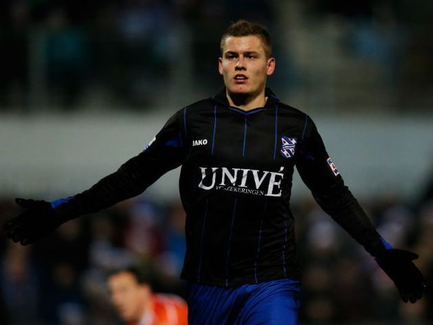

PSV conquista 24º título holandês ao vencer o concorrente direto e rival Ajax
Time de Eindhoven segue roteiro dos sonhos para vencer o terceiro título nacional em quatro temporadas
Classificação do Campeonato Holandês
Em grande fase na Holanda, David Neres é paciente sobre Seleção: “Um dia chego lá”
Melhor jogador do primeiro turno no Campeonato Holandês, brasileiro de 20 anos se vê adaptado à vida no país e sonha com primeiro título no Ajax
Feyenoord bate PSV nos pênaltis e conquista Supercopa da Holanda
Após empate em 0 a 0 no tempo normal, o Feyenoord levou a melhor na disputa dos pênaltis e conquistou a Supercopa da Holanda em cima do PSV
Ajax anuncia a contratação do técnico Erik ten Hag, ex-Utrecht
O Ajax anunciou nesta quinta-feira a contratação do técnico Erik ten Hag, que comandou o Utrecht nas duas últimas temporadas
Van Basten se diz aliviado após deixar comando do AZ: "A vida é uma só"
A empreitada de Marco van Basten como treinador do AZ Alkamaar durou apenas dois meses, até que o holandês surpreendeu ao pedir para abandonar o posto alegando problemas com o estresse do cargo
Germaine é homenageada pelo clube do coração antes de jogo na Holanda
Campeã da recém-inaugurada divisão peso-pena feminino do UFC, Germaine De Randamie ganhou uma homenagem no último sábado no estádio Galgenwaard, na cidade de Utrecht, onde nasceu na Holanda
Brasileiro Douglas marca, Twente vence e vai decidir título com o Ajax
Jogando em casa, os atuais campeões não tiveram dificuldades para golear o Willem, por 4 a 0, com direito a gol do zagueiro brasileiro Douglas, que vive grande momento e pode até se naturalizar holandês em breve

Lazio, Milan e Roma estão de olho em promessa islandesa
Atacante Alfred Finnbogason, do Heerenveen, marcou 17 gols em 15 partidas da atual edição do Campeonato Holandês
Groningen é campeão da Copa da Holanda e se classifica à Liga Europa
O Groningen, equipe do zagueiro brasileiro Eric Botteghin, se sagrou campeão de forma inédita da Copa da Holanda ao bater, neste domingo, o PEC Zwolle por 2 a 0 no Estádio Feyenoord, em Roterdã. Com o placar, o time se classificou diretamente para a Liga Europa
Willem II surpreende e goleia líder PSV por 5-0
A 27.ª jornada do campeonato holandês arrancou com uma surpreendente goleada (5-0) do Willem II sobre o líder PSV Eindhoven